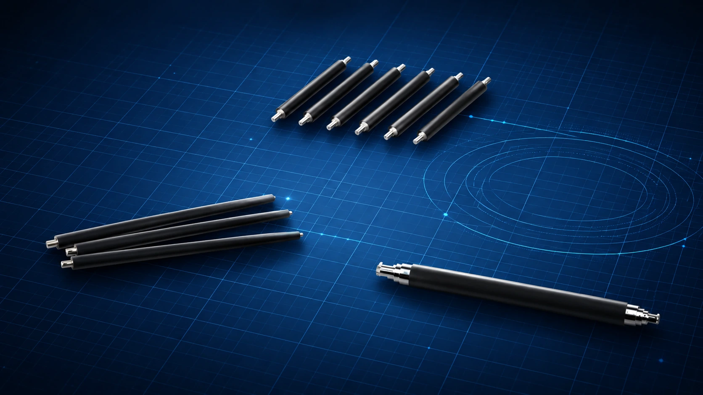
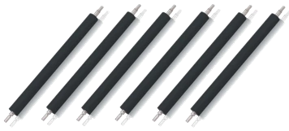
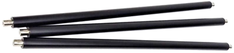
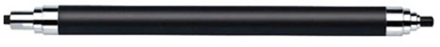

01
불량·수율 개선
코팅, 고무성형, 전기저항, 현상계, 조립·검사 공정의 변동을 데이터 기반으로 구조화합니다.
- 현장 진단 및 문제 정의
- DOE·MSA 기반 검증
- Control Plan·재발방지 체계
소재·구조·전기특성·공정·화질을 하나의 시스템으로 해석하여, 개발 리스크와 현장 변동을 줄이고 재현 가능한 양산 표준을 만듭니다.

Years of Printing R&D
Patent Applications
Annual Profit Improvement Contribution
Materials · Mechanism · Electrics · Process · Quality
FROM COMPONENT TO SYSTEM
화질 불량, 저항 편차, 코팅 불균일, 수율 저하, 양산 변동은 하나의 원인으로 끝나지 않습니다. M.O.T.는 부품의 소재·형상·전기적 거동과 제조 조건, 최종 사용환경 사이의 연결고리를 찾아 해결합니다.
WHAT M.O.T. DELIVERS
프로젝트의 종료 기준은 분석 보고서가 아닙니다. 성능 목표, 검증 데이터, 양산 조건, 검사 기준과 표준작업까지 고객 조직에 남기는 것을 목표로 합니다.
코팅, 고무성형, 전기저항, 현상계, 조립·검사 공정의 변동을 데이터 기반으로 구조화합니다.
요구사양, CTQ, 소재·구조, 시제품, 신뢰성, 양산 조건까지 개발의 전 과정을 연결합니다.
개인의 숙련에 의존하던 개발·제조 방식을 데이터와 표준 기반의 재현 가능한 시스템으로 전환합니다.
설계표준, 현장 교육, 영상과 기술자료를 조직의 장기 자산으로 전환합니다.
지식자산 보기 →CORE COMPONENT PORTFOLIO
현상·대전·정착·전사·기구·품질의 연계성을 기반으로 핵심부품의 성능 목표, 공정 창, 검사 기준을 함께 설계합니다.

DEVELOPMENT PLATFORM
도전성 실리콘과 표면 PU 코팅의 조합을 전기저항, 표면조도, 내구성, 현상 성능의 관점에서 통합 관리합니다.

CHARGING STABILITY
대전 성능, 내오존성, 내구성과 화상 안정성을 동시에 만족하도록 소재·형상·전기 조건을 설계합니다.

DEVELOPMENT CONTROL
자력 패턴, Sleeve·Gap·Developer 조건과 화질의 상관관계를 정량화해 현상 시스템을 안정화합니다.
ENGINEERING-TO-PRODUCTION METHOD
개선 결과는 공정조건, 검사 기준, 표준작업서, 교육자료와 데이터 관리체계까지 정리될 때 현장의 경쟁력이 됩니다.
고객 요구, 불량 데이터, 제품 구조와 작업조건을 연결해 실제 문제를 재정의합니다.
CTQ, 측정법, DOE와 판정기준을 설정해 검증 가능한 계획을 만듭니다.
소재, 구조, 공정, 장비와 검사조건을 통합 최적화합니다.
양산표준, Control Plan과 교육자료로 정리하여 개인 의존도를 줄입니다.
TRACK RECORD
고객사 및 세부 개발 데이터는 비공개 원칙을 지키며, 공개 가능한 범위의 경험과 방법론만 소개합니다.
모듈 설계 체계를 통해 연간 최소 250억 원 이상의 손익개선 효과에 기여.
250억+전사 설계프로세스와 개발·검증 체계를 표준화하고 실행.
System제도법·설계법·공차설계를 체계화한 기구설계 가이드 정립.
StandardFuji Xerox, Samsung, Pantum, Zhuhai Shinpure에서 제품·핵심부품·제조기술 개발 수행.
30+ YRSCORE EXPERIENCE
30+ Years ofEXPERT PROFILE
Fuji Xerox 기술연구소에서 시작해 Samsung Electronics Printing사업부, Pantum 및 최근 Zhuhai Shinpure까지, 프린팅 시스템·핵심부품·제조기술·설계프로세스 혁신을 수행했습니다.
현재는 독립 기술전문가로서 핵심부품 공동개발, 제조현장 문제 해결, 설계·제조 표준화, 기술이전과 교육에 집중합니다.
PROFESSIONAL TIMELINE
금형·부품·제조기술에서 출발해 프로세스개발까지 경험을 확장.
개발3그룹 및 현상 Lab에서 프린팅 시스템과 핵심부품 개발 수행.
고속 복합기·프린터 개발, Digital Design System, 도면 품질 표준화와 Modula Design 추진.
제품개발, 설계프로세스와 제조혁신을 중심으로 기술컨설팅 및 사업개발 수행.
프린팅 제품·핵심부품·제조기술 개발에 대한 기술 자문.
제품개발 총감으로서 핵심부품 및 제조기술 개발을 총괄한 후, 독립 기술사업으로 전환.
KNOWLEDGE ASSET
기술서적, 설계 템플릿, 현장 교육과 시각 콘텐츠를 통해 개인 경험을 팀과 조직이 활용할 수 있는 기술자산으로 전환합니다.
프린팅 시스템, 핵심부품, DOE·MSA, 공차설계, 현장 불량분석 교육
CTQ, 도면품질, Gate Review, Control Plan, 표준작업서 체계
복잡한 제조기술을 실행 가능한 시각 자료와 교육 콘텐츠로 전환
START A PROJECT
대상 부품, 현재 문제, 목표 사양, 일정과 보유 데이터를 알려주시면 지원 가능 범위와 추진 방식을 검토합니다.